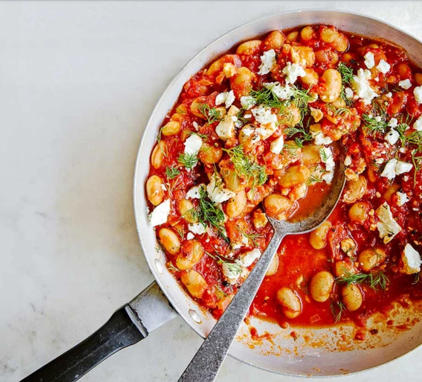

Main
Greek-style beans

Ingredients
- 2 tbsp olive oil
- 1 large red onion
- 3 garlic cloves
- 1½ tsp dried oregano
- 2 tbsp tomato purée
- 400g can chopped tomatoes
- 300ml low-salt vegetable stock
- ½ tsp caster sugar
- 2 x 400g can butter beans
- ½ lemon
- 50g feta
- small handful of dill
- toasted sourdough
Method
- Heat the oil in a deep frying pan over a medium-high heat. Add the onions with a pinch of salt and cook for 5 mins, until beginning to soften and the edges are turning golden. Mix in the garlic, oregano and tomato purée. Reduce the heat to medium and cook for 3-4 mins, stirring, until the purée turns dark red.
- Mix in the tomatoes, stock and sugar. Swill the can out with a splash of water, then pour into the pan as well. Leave it simmer away for 10-12 mins over a low-medium heat, then mix in the beans. Stir well, then leave to simmer for 2-3 mins before seasoning to taste with salt, pepper and a little lemon juice. Serve with the feta and dill scattered over the top, with toasted sourdough on the side.